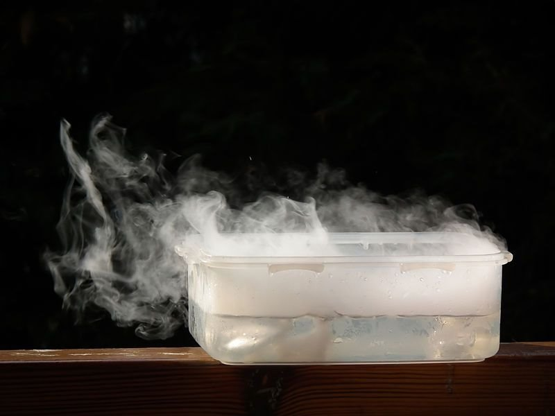
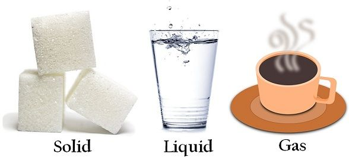
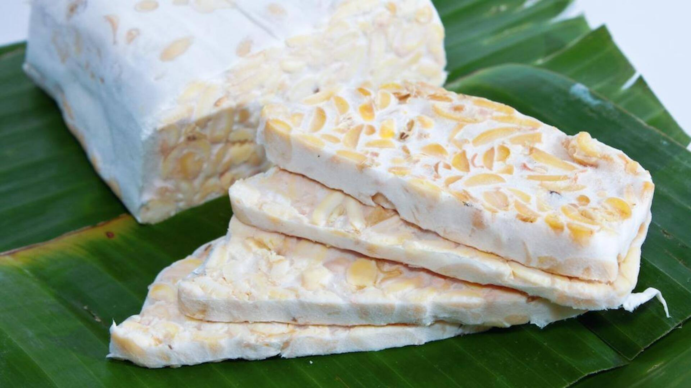
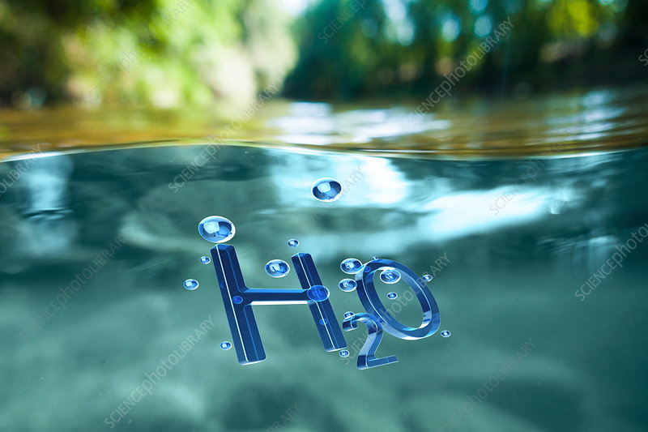
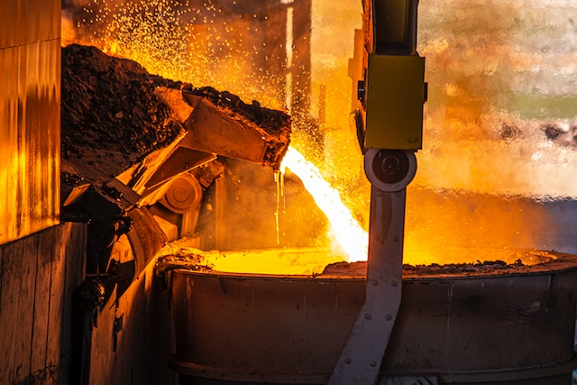

Setiap benda di sekitar kita — dari air yang kita minum, udara yang kita hirup, hingga meja tempat kita menulis — semuanya tersusun dari zat. Zat adalah segala sesuatu yang memiliki massa dan menempati ruang. Tanpa disadari, seluruh kehidupan manusia bergantung pada pemahaman tentang zat dan bagaimana zat itu berubah.

Letakkan file gambar dengan nama "gambar1" (format: jpg, png, webp, gif, dll) di folder "s1-bab-3"
Ilmu tentang zat dan perubahannya membantu kita mengenali sifat-sifat alam dan memahami mengapa sesuatu bisa terjadi. Misalnya, mengapa es bisa mencair saat dikeluarkan dari freezer? Mengapa besi bisa berkarat? Mengapa makanan bisa basi? Semua itu terjadi karena adanya perubahan pada zat, baik secara fisika, kimia, maupun biologis. Belajar tentang zat bukan sekadar menghafal rumus, tetapi memahami bagaimana dunia bekerja. Dari dapur rumah tangga hingga laboratorium riset, dari proses memasak hingga pembuatan bahan bakar, semuanya melibatkan zat dan perubahan zat.
Pengetahuan ini juga memiliki nilai ekonomi dan sosial. Inovasi seperti sabun organik, kemasan ramah lingkungan, dan bahan bangunan ringan berasal dari pemahaman mendalam tentang sifat dan perubahan zat. Dengan kata lain, ilmu ini menjadi jembatan antara sains dan kehidupan nyata.
Segala sesuatu yang dapat kita lihat, sentuh, hirup, bahkan yang tak kasat mata seperti udara, semuanya tersusun dari zat. Zat adalah materi penyusun alam semesta yang memiliki massa dan menempati ruang. Walaupun tampak beragam, seluruh zat di dunia ini dapat diklasifikasikan berdasarkan wujud fisiknya menjadi tiga kelompok besar: padat, cair, dan gas. Setiap wujud memiliki ciri khas dalam hal bentuk, volume, serta gerak partikel di dalamnya. Selain itu, zat juga memiliki sifat-sifat fisika dan kimia yang membuat setiap zat unik.

Letakkan file gambar dengan nama "gambar2" (format: jpg, png, webp, gif, dll) di folder "s1-bab-3"
Zat padat adalah bentuk zat yang memiliki bentuk dan volume tetap. Partikel-partikel penyusunnya tersusun rapat dan teratur, sehingga hanya mampu bergetar di tempatnya tanpa berpindah posisi. Karena kerapatan partikel yang tinggi, zat padat cenderung tidak mudah dimampatkan. Contoh paling sederhana adalah batu, es, atau meja kayu — semua memiliki bentuk yang tetap, tidak berubah meski dipindahkan wadahnya.
Fenomena menarik dari zat padat dapat diamati pada logam. Ketika logam dipanaskan, partikel-partikelnya bergetar lebih cepat dan jaraknya sedikit bertambah, sehingga logam memuai. Prinsip sederhana ini digunakan pada rel kereta api yang dipasang dengan celah sambungan untuk menghindari pemuaian berlebih.
Dari sudut pandang ilmiah, struktur zat padat menjelaskan mengapa kekerasan, massa jenis, dan titik leleh tiap zat padat berbeda. Berlian dan grafit, misalnya, keduanya tersusun dari karbon, tetapi perbedaan pola ikatan atomnya menyebabkan berlian sangat keras sedangkan grafit lunak. Artinya, sifat makroskopik (yang tampak) dari zat padat sangat dipengaruhi oleh struktur mikroskopiknya.
Zat cair memiliki volume tetap, tetapi bentuknya berubah mengikuti wadah. Partikel-partikel zat cair lebih renggang dan bergerak bebas dibanding zat padat, namun tetap saling berdekatan. Karena itu, zat cair dapat mengalir, menetes, dan menyesuaikan bentuk wadahnya, seperti air dalam gelas atau minyak di panci.
Sifat khas zat cair bisa diamati dalam kehidupan sehari-hari: air dapat melarutkan gula, kopi, atau garam karena molekul air mampu menembus dan memisahkan partikel-partikel zat terlarut. Kemampuan melarutkan ini disebut kelarutan, dan menjadi dasar dari banyak proses kimia dan biologi, termasuk di dalam tubuh manusia.
Zat cair juga memiliki tegangan permukaan — gaya yang membuat permukaan air tampak seperti lapisan tipis elastis. Fenomena ini memungkinkan serangga kecil seperti Gerris (serangga air) dapat berjalan di atas air tanpa tenggelam.
Dari sisi ilmiah, sifat-sifat seperti viskositas (kekentalan), kelarutan, dan daya hantar panas menjadikan zat cair berperan penting dalam berbagai teknologi, mulai dari sistem pendingin mesin hingga cairan kimia dalam laboratorium.
Berbeda jauh dari dua wujud sebelumnya, zat gas memiliki bentuk dan volume yang tidak tetap. Partikel-partikelnya sangat renggang dan bergerak bebas ke segala arah. Karena jarak antarpartikel yang jauh, gas mudah dimampatkan dan dapat mengembang memenuhi seluruh ruang yang ditempatinya. Contohnya adalah udara yang kita hirup, campuran gas seperti nitrogen, oksigen, dan karbon dioksida.
Sifat gas ini membuatnya vital dalam kehidupan dan teknologi: udara bertekanan digunakan pada rem hidrolik, oksigen pada alat pernapasan, dan gas helium pada balon udara.
Secara fisika, perilaku gas dijelaskan dengan teori kinetik gas. Semakin tinggi suhu gas, semakin cepat gerakan partikelnya, dan tekanan gas terhadap dinding wadah juga meningkat. Inilah sebabnya ban mobil dapat mengembang lebih keras saat cuaca panas — karena udara di dalamnya memuai akibat peningkatan energi partikel.
Setiap zat dapat diidentifikasi dari sifat fisika dan sifat kimianya. Sifat fisika mencakup karakteristik yang dapat diamati tanpa mengubah zat menjadi zat lain, seperti warna, massa jenis, titik leleh, titik didih, bau, dan konduktivitas listrik. Misalnya, logam tembaga berwarna kemerahan dan menghantarkan listrik dengan baik, sedangkan air membeku pada suhu 0°C dan mendidih pada 100°C.
Sebaliknya, sifat kimia menggambarkan kemampuan zat untuk bereaksi dan berubah menjadi zat baru. Misalnya, kertas yang dibakar berubah menjadi abu dan gas karbon dioksida; atau besi yang berkarat akibat reaksi dengan oksigen dan air. Perubahan ini bersifat irreversibel (tidak dapat kembali seperti semula), dan menunjukkan adanya pembentukan zat baru dengan sifat yang berbeda dari zat asal.
Mengetahui sifat fisika dan kimia sangat penting untuk memahami cara kerja alam dan untuk berbagai penerapan praktis. Dari pembuatan paduan logam hingga pengolahan makanan, dari pengawetan bahan hingga inovasi material baru — semua didasarkan pada penguasaan sifat-sifat zat.
Setiap zat memiliki identitas unik yang ditentukan oleh susunan partikel dan jenis ikatan antaratomnya. Hubungan antara struktur dan sifat ini menjadi kunci bagi ilmuwan dalam menciptakan bahan-bahan baru. Contohnya, ilmuwan merekayasa polimer agar kuat tetapi lentur, sehingga bisa digunakan dalam pembuatan helm, pakaian antipeluru, atau bahan bangunan ringan.
Pemahaman struktur mikroskopik inilah yang menjadikan ilmu tentang zat sebagai dasar bagi kimia material, fisika benda padat, dan teknologi modern.
Segala sesuatu di alam tidak pernah benar-benar diam. Es mencair, besi berkarat, buah membusuk, kertas terbakar, dan tubuh kita mencerna makanan—semuanya adalah bentuk perubahan zat. Perubahan ini adalah bagian dari siklus alami kehidupan dan menjadi dasar dari banyak proses teknologi. Dalam ilmu IPAS, perubahan zat dibedakan menjadi perubahan fisika, perubahan kimia, dan perubahan biologi. Ketiganya memiliki mekanisme berbeda, tetapi saling berkaitan dalam menjaga keseimbangan kehidupan dan aktivitas manusia di bumi.

Letakkan file gambar dengan nama "gambar3" (format: jpg, png, webp, gif, dll) di folder "s1-bab-3"
Perubahan fisika adalah perubahan yang tidak menghasilkan zat baru. Dalam perubahan ini, partikel penyusun zat tetap sama, hanya susunan atau jaraknya yang berubah. Contoh paling umum dapat ditemukan dalam perubahan wujud zat:
Semua contoh tersebut menunjukkan bahwa identitas zat tetap sama, hanya bentuk fisiknya yang berubah.
Secara mikroskopik, perubahan fisika melibatkan energi kinetik partikel. Ketika zat menerima panas, energi partikel meningkat sehingga jarak antarpartikel bertambah, menyebabkan perubahan dari padat ke cair, atau dari cair ke gas. Sebaliknya, ketika zat kehilangan panas, partikel bergerak lebih lambat, dan jarak antarpartikel menyempit, menyebabkan pengembunan atau pembekuan.
Perubahan fisika ini juga terjadi dalam kehidupan sehari-hari tanpa disadari. Contohnya ketika logam dipanaskan dan memuai, atau ketika udara di dalam ban mobil mengembang saat siang hari. Tidak ada zat baru terbentuk—hanya energi dan keadaan zat yang berubah. Perubahan fisika penting dalam rekayasa material dan industri. Proses pembentukan kaca, logam, plastik, dan tekstil semuanya bergantung pada kemampuan manusia mengendalikan perubahan fisika melalui suhu, tekanan, dan gaya.
Berbeda dengan perubahan fisika, perubahan kimia menghasilkan zat baru dengan sifat yang berbeda dari zat asalnya. Ini terjadi karena ikatan antaratom atau molekul berubah, membentuk struktur kimia baru. Contoh yang paling mudah diamati adalah:
Dalam setiap kasus, terjadi reaksi kimia yang tidak dapat dibalik begitu saja. Reaksi ini biasanya disertai dengan perubahan energi—baik berupa pelepasan energi (eksoterm) seperti pada pembakaran, maupun penyerapan energi (endoterm) seperti pada proses fotosintesis.
Perubahan kimia menjadi inti dari banyak teknologi modern: pembuatan baterai, produksi obat-obatan, pengolahan limbah, bahkan pembuatan makanan. Ketika seorang koki memanggang roti, ia sesungguhnya sedang mengatur reaksi kimia antara gula, protein, dan panas yang menciptakan aroma khas dan warna keemasan. Ilmu tentang perubahan kimia membantu manusia memahami bagaimana energi dan materi saling berinteraksi untuk menciptakan sesuatu yang baru.
Perubahan biologi adalah perubahan zat yang terjadi melalui proses kehidupan makhluk hidup. Proses ini melibatkan enzim, mikroorganisme, atau reaksi biokimia yang kompleks. Beberapa contoh yang umum dijumpai antara lain:
Perubahan biologi sering kali melibatkan kombinasi antara perubahan fisika dan kimia. Misalnya, saat makanan membusuk, terjadi perubahan warna dan bau (fisika), sekaligus pembentukan zat baru hasil reaksi enzimatis (kimia).
Dalam konteks kehidupan, perubahan biologi adalah fondasi dari siklus energi di bumi. Tanpa perubahan ini, tidak akan ada daur karbon, daur nitrogen, dan keseimbangan ekosistem. Proses-proses biologi juga dimanfaatkan manusia untuk menciptakan teknologi ramah lingkungan, seperti biogas, bioplastik, dan biofuel, yang semuanya bergantung pada kemampuan organisme mengubah zat secara alami.
Untuk memahami perbedaan ketiganya, mari lihat dari sisi hasil, mekanisme, dan reversibilitas (kemampuan kembali ke bentuk semula):
| Jenis Perubahan | Ciri Utama | Contoh | Dapat Kembali ke Bentuk Semula? |
|---|---|---|---|
| Fisika | Tidak terbentuk zat baru | Air menjadi uap, logam memuai | Ya |
| Kimia | Terbentuk zat baru | Kertas terbakar, besi berkarat | Tidak |
| Biologi | Terjadi karena aktivitas makhluk hidup | Fermentasi, pencernaan, fotosintesis | Tidak sepenuhnya |
Memahami ketiga jenis perubahan ini penting untuk membaca tanda-tanda alam dan memanfaatkan sains dalam kehidupan sehari-hari. Baik dalam mengolah makanan, menjaga lingkungan, maupun merancang teknologi baru—semuanya bergantung pada bagaimana zat dapat berubah dan bereaksi.
Setiap perubahan zat selalu melibatkan energi. Dalam perubahan fisika, energi digunakan untuk mengubah jarak antarpartikel. Dalam perubahan kimia, energi digunakan untuk memutus dan membentuk ikatan baru. Pada perubahan biologi, energi menjadi sumber kehidupan itu sendiri—misalnya energi dari matahari diubah menjadi energi kimia oleh tumbuhan.
Energi tidak pernah hilang, hanya berpindah bentuk. Prinsip ini dikenal sebagai Hukum Kekekalan Energi, yang menjadi dasar pemahaman seluruh fenomena perubahan zat di alam semesta.
Alam semesta di sekitar kita tersusun dari miliaran jenis benda, tetapi sesungguhnya semuanya berasal dari penyusunan zat yang sangat sederhana. Dalam ilmu IPAS, seluruh zat dapat digolongkan menjadi unsur, senyawa, dan campuran. Pemahaman tentang ketiga jenis zat ini membantu kita menelusuri struktur dasar materi, memahami cara benda terbentuk, dan bagaimana manusia dapat merekayasa bahan baru untuk memenuhi kebutuhan hidup.

Letakkan file gambar dengan nama "gambar4" (format: jpg, png, webp, gif, dll) di folder "s1-bab-3"
Unsur adalah zat tunggal yang tidak dapat diuraikan lagi menjadi zat lain dengan cara kimia biasa. Setiap unsur tersusun dari satu jenis atom saja, dan menjadi "batu bata" penyusun segala materi di alam. Contoh unsur antara lain: oksigen (O), hidrogen (H), karbon (C), besi (Fe), dan emas (Au).
Di dalam tabel periodik unsur kimia, kita menemukan lebih dari 100 unsur yang telah dikenal manusia. Dari unsur-unsur ini, alam membangun seluruh keragaman benda: dari air di sungai, udara yang kita hirup, hingga tubuh manusia sendiri.
Setiap unsur memiliki sifat khas. Misalnya:
Dengan memahami unsur, manusia belajar mengendalikan bahan dasar alam. Misalnya, dalam dunia industri, unsur silikon digunakan dalam pembuatan chip komputer karena sifatnya sebagai semikonduktor, sementara unsur tembaga digunakan sebagai penghantar listrik yang efisien.
Jika dua atau lebih unsur bereaksi secara kimia, maka terbentuklah senyawa — zat baru dengan sifat yang berbeda dari unsur-unsur penyusunnya. Senyawa tidak bisa dipisahkan hanya dengan cara fisika seperti disaring atau diuapkan, melainkan harus melalui reaksi kimia. Contohnya sangat dekat dengan kehidupan:
Setiap senyawa memiliki perbandingan unsur yang tetap dan sifat baru yang tidak dapat diprediksi hanya dari unsur pembentuknya. Fenomena ini menjadi bukti bahwa alam bersifat emergen — keseluruhan sering kali memiliki sifat yang tak dimiliki bagian-bagiannya.
Dalam dunia modern, pengetahuan tentang senyawa menjadi dasar dari kimia material, farmasi, dan bioteknologi. Dari obat-obatan penyembuh penyakit hingga bahan plastik ramah lingkungan, semuanya lahir dari kemampuan manusia merancang ikatan antarunsur di tingkat atom.
Berbeda dengan senyawa, campuran terbentuk ketika dua atau lebih zat bergabung tanpa reaksi kimia. Artinya, masing-masing zat tetap mempertahankan sifat aslinya. Campuran bisa homogen (merata) atau heterogen (tidak merata).
Campuran bisa dipisahkan melalui cara fisika, seperti penyaringan, penguapan, distilasi, atau magnetisasi, tergantung sifat zat penyusunnya. Misalnya:
Pemahaman tentang campuran menjadi sangat penting dalam industri pangan, kosmetik, pertambangan, hingga lingkungan. Misalnya, dalam pembuatan obat, zat aktif harus dicampur secara homogen agar dosisnya tepat; dalam pengolahan limbah, zat pencemar harus dipisahkan dari air sebelum dibuang ke lingkungan.
Untuk memahami keterkaitannya, perhatikan perbandingan berikut:
| Jenis Zat | Penyusun | Terjadi Reaksi Kimia? | Dapat Dipisahkan Secara Fisika? | Contoh |
|---|---|---|---|---|
| Unsur | 1 jenis atom | Tidak | Tidak | Oksigen (O₂), Besi (Fe) |
| Senyawa | 2 atau lebih unsur dengan perbandingan tetap | Ya | Tidak | Air (H₂O), Garam (NaCl) |
| Campuran | 2 atau lebih zat tanpa perbandingan tetap | Tidak | Ya | Udara, Air Laut, Pasir dan Air |
Perbedaan mendasar ini membantu kita mengenali struktur hierarkis materi: dari atom → unsur → senyawa → campuran → benda yang kita gunakan setiap hari. Ilmu modern, terutama fisika dan kimia, terus menelusuri struktur terdalam ini, bahkan hingga ke partikel subatom seperti elektron, proton, dan quark. Namun bagi pembelajaran IPAS, pemahaman hingga tingkat unsur dan senyawa sudah cukup untuk membuka kesadaran tentang kerumitan sederhana alam.
Konsep ini tidak berhenti di laboratorium. Seluruh kehidupan bergantung pada interaksi unsur, senyawa, dan campuran:
Di masa depan, kemampuan memahami dan mengolah unsur serta senyawa akan menentukan keberlanjutan hidup manusia. Teknologi seperti nanomaterial, bioteknologi, dan energi hijau seluruhnya bersandar pada pemahaman dasar ini.
Dengan kata lain, belajar tentang unsur, senyawa, dan campuran bukan hanya mengenali materi—tetapi memahami cara alam bekerja dari dalam.
Ilmu tentang zat bukan sekadar teori di laboratorium. Ia menembus dapur, pasar, pabrik, bahkan sistem ekonomi dunia. Setiap benda yang digunakan manusia — dari sabun, pupuk, hingga bahan bakar — berasal dari pemahaman tentang sifat zat dan cara mengolahnya. Karena itu, pengetahuan tentang unsur, senyawa, dan campuran menjadi salah satu fondasi peradaban modern.

Letakkan file gambar dengan nama "gambar5" (format: jpg, png, webp, gif, dll) di folder "s1-bab-3"
Tiga kebutuhan pokok manusia — pangan, sandang, papan — seluruhnya bergantung pada kemampuan manusia mengolah zat.
Makanan terdiri dari campuran senyawa organik seperti karbohidrat, protein, dan lemak. Di dalam tubuh, senyawa ini diuraikan melalui reaksi kimia untuk menghasilkan energi. Proses memasak pun sebenarnya adalah eksperimen kimia kecil: pemanasan mengubah struktur molekul protein, fermentasi memanfaatkan aktivitas mikroorganisme, dan pengawetan menggunakan reaksi antara garam atau asam dengan bahan makanan.
Bahan pakaian berasal dari serat alami (kapas, wol, sutra) atau serat sintetis (nilon, poliester) yang merupakan hasil rekayasa kimia dari senyawa karbon. Industri tekstil modern menggunakan campuran zat pewarna, pelarut, dan bahan pengikat untuk menghasilkan kain yang indah, tahan lama, dan nyaman.
Dari semen, kaca, hingga cat, semua merupakan hasil reaksi kimia yang terencana. Misalnya, semen portland dibuat dari campuran kalsium karbonat, silika, dan alumina yang dipanaskan hingga bereaksi menjadi senyawa kompleks. Sementara kaca berasal dari campuran pasir silika (SiO₂), soda (Na₂CO₃), dan kapur (CaCO₃) yang dilebur menjadi bahan transparan keras.
Dalam setiap contoh ini, manusia memanfaatkan sifat zat — titik leleh, kelarutan, reaktivitas — untuk menciptakan bahan baru yang lebih efisien dan sesuai kebutuhan.
Sains dan ekonomi selalu berjalan beriringan. Pemahaman tentang zat melahirkan industri kimia, energi, dan teknologi material, yang kini menjadi tulang punggung perekonomian global.
Dengan demikian, ekonomi modern sesungguhnya adalah ekonomi berbasis sains zat. Negara atau masyarakat yang menguasai ilmu ini akan mampu menciptakan nilai tambah yang besar dari bahan mentah sederhana.
Namun, pengolahan zat tidak selalu membawa dampak positif. Ketidakhati-hatian dalam penggunaan dan pembuangan zat kimia menimbulkan masalah sosial dan lingkungan yang serius.
Limbah industri yang mengandung senyawa beracun (seperti logam berat, asam, dan pestisida) dapat mencemari air dan udara. Hal ini merusak ekosistem dan kesehatan masyarakat. Misalnya, gas karbon monoksida (CO) dari kendaraan bermotor dapat mengganggu kemampuan darah mengikat oksigen.
Plastik adalah senyawa polimer yang kuat dan murah, tetapi sulit terurai. Akibatnya, miliaran ton plastik menumpuk di lautan, mencemari rantai makanan, dan mengancam kehidupan laut. Solusinya kini diarahkan ke bioplastik dan daur ulang kimiawi, yang memanfaatkan reaksi untuk memecah plastik kembali menjadi bahan dasar yang bisa digunakan ulang.
Campuran zat berbahaya dalam makanan, kosmetik, dan udara rumah tangga dapat menimbulkan penyakit. Karena itu, pendidikan IPAS membantu masyarakat memahami label bahan kimia, cara penyimpanan, dan risiko penggunaan zat tertentu.
Pemahaman ini menumbuhkan kesadaran ekologis: bahwa setiap zat yang kita ciptakan atau gunakan akan berinteraksi dengan sistem kehidupan di Bumi. Manusia tidak bisa hanya menjadi pengguna, tetapi juga harus menjadi pengelola yang bijak.
Masa depan umat manusia akan sangat ditentukan oleh inovasi dalam pengelolaan zat. Bidang-bidang berikut adalah contoh nyata bagaimana konsep dasar IPAS berkembang menjadi teknologi mutakhir:
Bahan yang dapat berubah sifat tergantung kondisi lingkungan — misalnya kaca yang bisa menyesuaikan tingkat kegelapan terhadap cahaya, atau logam yang "mengingat" bentuk semula.
Penelitian tentang katalis, elektrolit, dan bahan penyimpan energi membuka jalan bagi baterai yang lebih efisien dan ramah lingkungan.
Melalui pemahaman struktur molekul, ilmuwan mampu merancang senyawa obat baru, menciptakan enzim buatan, bahkan "membangun" bahan dari organisme hidup.
Dunia menuju paradigma baru: bukan lagi "ambil–gunakan–buang", tetapi "ambil–gunakan–ubah–gunakan lagi." Semua ini berpangkal pada kemampuan memahami dan mengendalikan perubahan kimia zat.
Pada akhirnya, mempelajari zat bukan hanya mempelajari benda mati. Kita sedang mempelajari cara alam mengatur dirinya sendiri, dan bagaimana manusia bisa hidup selaras dengannya. Setiap benda di sekitar — udara, air, logam, plastik, makanan — adalah kisah panjang interaksi unsur dan energi.
Ilmu IPAS memberi kita kunci untuk memahami kisah itu, agar kita bisa menggunakan zat dengan cerdas, menciptakan kesejahteraan tanpa merusak keseimbangan bumi.
Eksperimen dan aktivitas IPAS bukan sekadar bermain dengan bahan-bahan dapur. Di balik setiap pengamatan sederhana tersembunyi prinsip ilmiah besar: bagaimana partikel berinteraksi, bagaimana energi bekerja, dan bagaimana pengetahuan dapat mengubah kehidupan.
Melalui pendekatan ini, peserta didik tidak hanya belajar tentang zat dan perubahannya, tetapi juga belajar menjadi ilmuwan kecil yang peduli, kreatif, dan berpikir kritis.
"Setiap zat menyimpan rahasia alam. Dengan mempelajarinya, kita belajar membaca bahasa semesta."